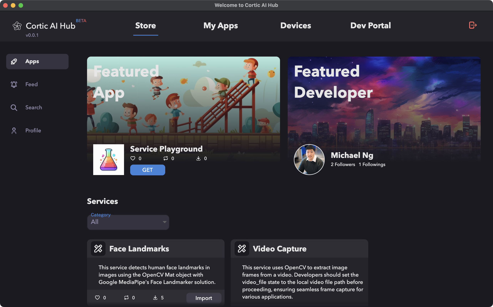
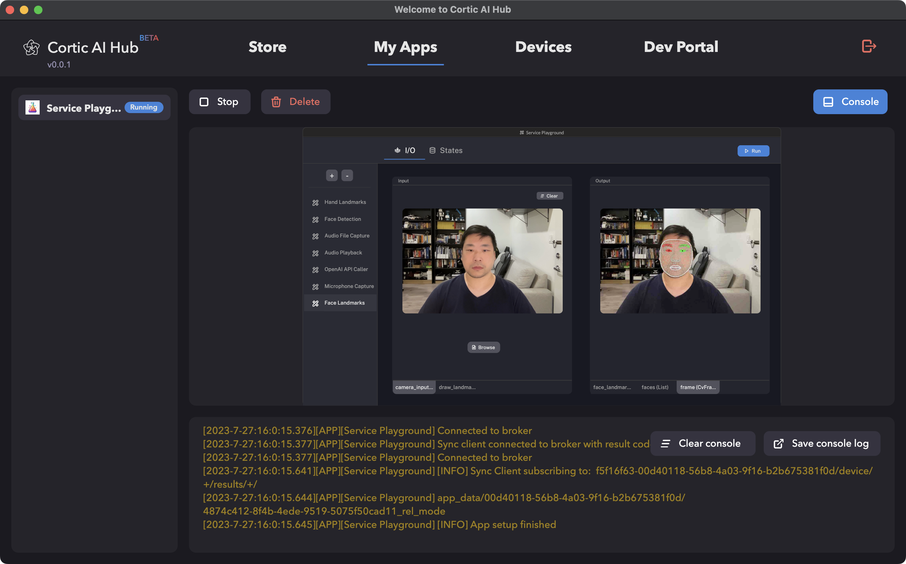
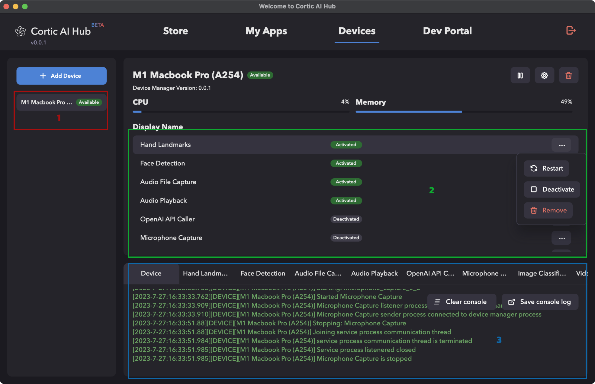
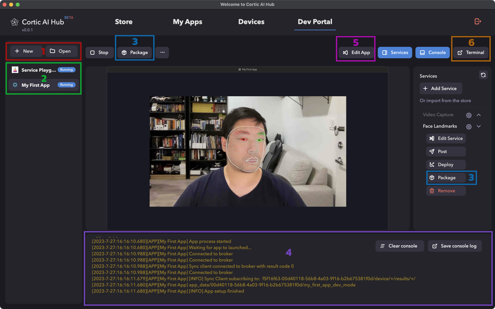

Cortic AI Hub User Guide
Welcome to the Cortic AI Hub User Guide. The AI Hub is an integral part of the Cortic Platform, designed to
facilitate various functionalities for users and developers alike.
Store
The Store is a marketplace where users can share or download various apps and services. Here, you can explore
a multitude of apps that have been shared by other users or developers. You can upload and distribute your
applications and services to be used by other Cortic AI Hub users.

Additional things to do:
- Download apps and services that interest you: Browse through a variety of applications and services,
download, and install them directly from the store for your use.
- Get updates in your own feed from everyone you follow: Your personalized feed will display the latest
updates, releases, and news from all the developers you follow. This ensures that you never miss out on
the latest advancements and innovations tailored to your interests.
- Search for new apps and services: The Store's search functionality allows users to easily find specific
apps or services based on keywords or categories.
- Customize your public profile: Personalize your user profile by adding a profile picture, bio, and more.
A customized profile lets others know more about you, especially if you're a developer or a frequent
contributor to the community. By showcasing your interests and specialties, you can attract like-minded
individuals and foster collaborations.
My Apps
The My Apps section is a personal dashboard where you can view and run the apps that you've downloaded from
the Store.

- Run downloaded apps: You can execute any application you've installed directly from the "My Apps"
section.
- Manage your app library: You can remove old or unwanted apps to keep your collection up to date.
Devices
The Devices section offers a holistic view of all devices associated with the current Hub. Moreover, it
provides insights into the services running on each device and their respective states.

- Monitor all associated devices: View all your connected devices, monitor their status and performance.
- View services running on each device: Get detailed information about each service running on your
devices, including resource usage and operational status.
- Check the console log from each device or service: Provides real-time updates on the status of each
service, enabling you to monitor and troubleshoot effectively.
Dev Portal
The Dev Portal is crafted for developers aiming to create new apps or services. It presents a comprehensive
view of all apps in development and delineates the services leveraged by each app.

- Create new apps or import existing apps from source. You can also manage existing properties for apps
and services.
- Run the multiple apps and deploy associated services to different devices: Allows you to run your apps
in a development environment, and deploy the services they depend on to various devices.
- Package apps and services for subsequent upload to the Store: After testing and finalizing your
application, package it with all its dependent services for distribution via the Store.
- Monitor the currently running app's console output.
- Easily edit existing source code for apps and services.
- Configure Python runtime environment for each app.
Next Steps
Now that you're familiar with the Cortic AI Hub and its functionalities:
- Explore the Store to find apps and services that cater to your needs: Find applications that suit your
needs, and expand the functionality of your Cortic AI Hub.
- Dive into the Dev Portal if you're interested in developing your own app or service: Make use of the
robust development tools to create and share your own applications.
- Engage with the community to share your apps, services, and get feedback: Participate in community
discussions, get feedback on your applications, and help others by sharing your experiences.